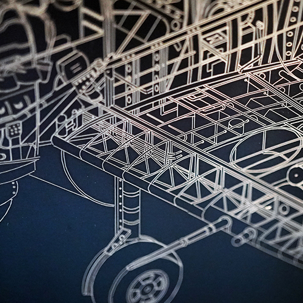

Vanadate Lasers Produce Versatile Marking on a Range of Materials
E-Series diode-pumped YAG and vanadate laser markers offer improved beam quality, increased depth of focus, and higher peak powers compared to fiber lasers—for fine marking, heat-sensitive materials (metal, foils, silicon, plastics, etc.) and applications where high consistency is required.

- Low-cost engraving and annealing for a wide array of product materials including ferrous and non-ferrous metal, label materials, and silicon
- Precise setting controls for fine-tuned application versatility: engraving, annealing, surface marking, and color marking
- Very small HAZ (heat-affected zone) provides additional flexibility with heat-sensitive and delicate components
Models
- EVCDS Laser Marking System
- EV15DS Laser Marking System
- EV40 Laser Marking System
Technology Options
- Vari-Z™ 3-Axis
- Mark-on-the-Fly Technology
- Programmable Mounting Post
